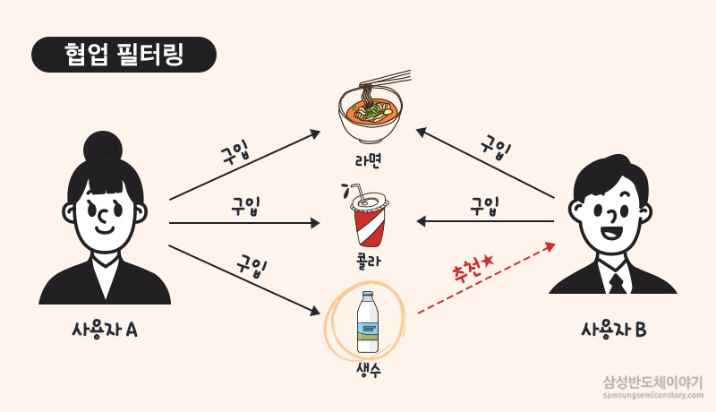
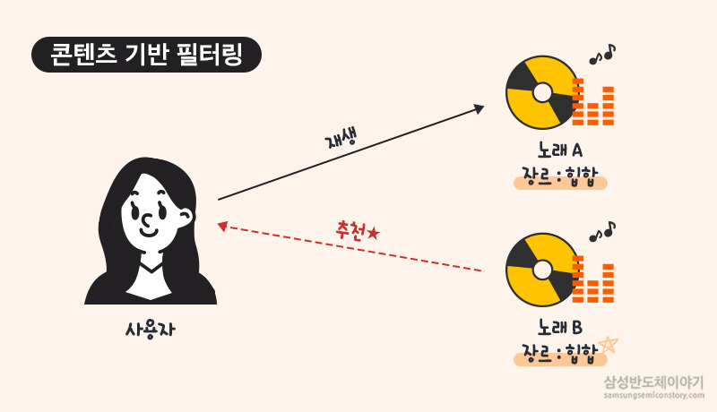

추천 알고리즘이란?🤖
추천 알골기즘 기술은 주로 인터넷 쇼핑이나 OTT프로그램에서 활용됩니다. 개인화 디바이스를 켜는 순간 시작되는 개인 맞춤형 추천 기술이고
인터넷 쇼핑 외에도 뉴스 검색이나 네비게이션에서도 연령과 개인에 따라 다르게 추천해줍니다. 알고리즘이란 주어진 문제를 논리적으로 해결하기 위한
절차, 방법, 명령어들의 집합으로, 추천알고리즘 기술은 대표적으로 협업필터링과 콘텐츠기반 필터링이 있습니다.
추천 알고리즘에 사용되는 기술👾
| 설명 | |
|---|---|
|  | 협업 필터링 협업 필터링은 비슷한 성향만 따지기 때문에 새로운 상품같은 경우 구매이력이 적어 상품에 대한 정보가 부족하다는 단점이 있다. |
| 콘텐츠기반 필터링 콘텐츠 기반 필터링은 사용자에 대한 정보만 갖고 있어 정교하게 추진할 수는 있지만, 그로 인해 다양성이 떨어진다. |  |
| 알고리즘 기술의 개인정보 취합 경로 회원가입시 제공되는 정보나 검색 기록 등이 데이터로 쌓여 각종 데이터를 기업이 확보하여 분석한다. 이러한 이유로 사람들이 유튜브나 넷플릭스 등을 이용할 때 알고리즘이 추천해주는 경로대로 영상을 시청하게 되는 것이다. 추천시스템은 지속적으로 발전하고 있으며, 앞으로 다양한 측면에서 더 나은 기능을 제공할 것으로 예상된다. 추천시스템은 점차 더 정확한 개인화 능력을 갖출 것이며 사용자의 시청기록,검색 키워드 이외에도 더 다양한 데이터를 활용하도록 발전할 것이다. 초개인화시대에 걸맞는 추천 알고리즘 기술은 앞을 기업의 필수적인 마케팅 요소가 될 것이고, 이용자의 만족도를 더욱 충족시킬 것이다. |
|
협업필터링과 콘텐츠기반 필터링의 과정 비교🌏
| 협업핕터링 | 콘텐츠기반 필터링 |
|---|---|
| 유저1과 유저2가 기사1 읽음 | 유저가 기사1 읽음 |
| 유저1이 기사2를 읽음 | 기사1과 비슷한 기사2 등장 |
| 유저1,2 모두 기사1을 접했으므로 비슷한 사용자이고 유저2에게 기사2 추천 | 따라서 유저에게 기사2 추천 |